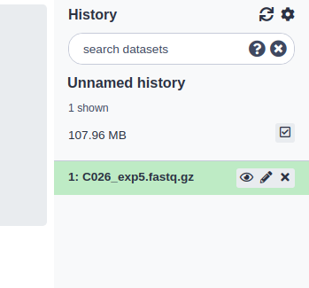
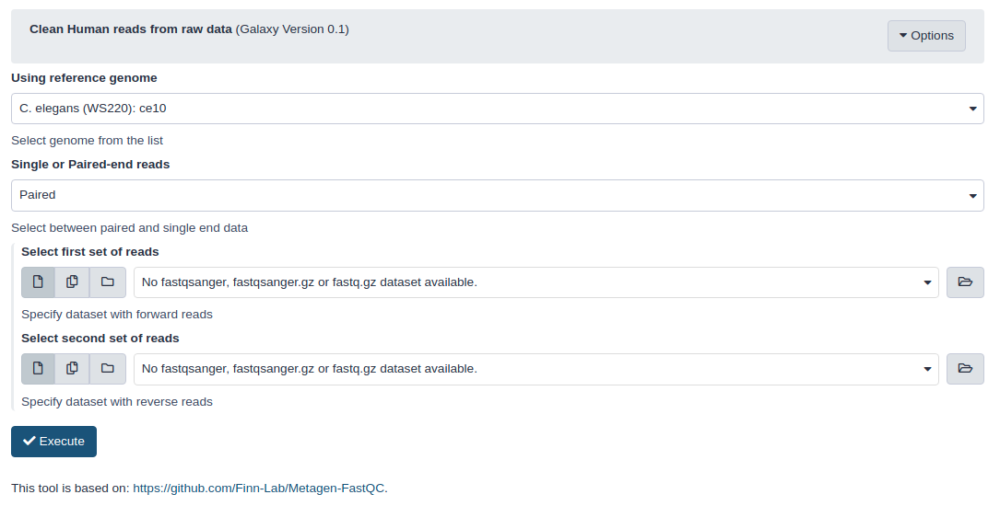
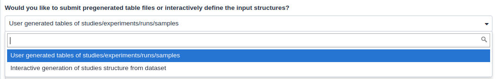
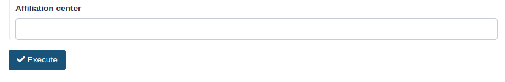

Hello, your ENA-upload Galaxy container is running!
This container is optimized to clean human reads from raw reads and to upload them to
ENA,
this in only a few steps. The ENA uploading is based on the tool ena-upload-cli while
the
reads_cleaning tool is based on Metagen-FastQC workflow.
1. Uploading data to Galaxy
ENA will accept only raw read files via programmatic submissions (this tool). Genome or transcriptome
assemblies can be submitted to ENA using the the ENA website.
ENA will accept fastq.gz (SE and PE), bam and cram formats.
Raw data can be uploaded using uploaded using Upload File, found at the top of the
Tools panel:
Uploading data to Galaxy
There are different recommended options for uploading the read data:
Load by “browsing” for a local file. Best for small datasets. Some servers will support load data that
is 2 GB or larger. If you are having problems with this method, try FTP.
Load using an HTTP URL or FTP URL.
When the local files are selected or a url is given, click “start” to start the uploading to Galaxy.
More information on data upload to Galaxy can be found in Galaxy support.
Your data should appear on the right panel in green. You can rename, tag, preview edit or delete data objects
from here.

Files that are uploaded will show up in the history panel.
2. Filter human reads out of the raw reads
In order to comply with Europe’s General Data Protection Regulation (GDPR),
traces of human genetic information must be removed from the raw data before submitting it to ENA. A tool is
included that filters out reads that map to the human genome using Metagen-FastQC.
Select the filtering tool from the Tools panel on the right.
Select human h38 reference genome.
Choose single or paired end
Select the uploaded files
Click on Execute

The interface of the read cleaning tool.
The tool will now process the raw reads to remove reads that map to the human genome. This can take a while.
The resulting filtered data files are found on the right panel.
3. Uploading the data accompanied with the metadata
Submission to ENA requires accompanying metadata that complies with the ENA metadata
model.
The tool offers two ways of entering metadata for submission: interactively or via a metadata template. All
metadata fields must be completed for the submission to go through. Both ways allow you to make a test
submission to the server of ENA. This enables you to check if everything is showing up as expected and the
metadata is correct.

Two ways of submitting the metadata through the ENA-upload tool.
Interactive metadata upload
For a small number of submissions, metadata is best entered interactively by completing all the boxes.
Metadata fields are nested according to ENA metadata model:
A study (project) groups together data submitted to the archive and controls its
release date. A study accession is typically used when citing data submitted to ENA.
A sample contains information about the sequenced source material. Samples are
associated with checklists, which define the fields used to annotate the samples. Samples are always
associated with a taxon.
An experiment contains information about a sequencing experiment including library and
instrument details.
A run is part of an experiment and refers to data files containing sequence reads.
At the bottom, select the filtered data files associated with the metadata.
At last, fill in the Affiliation center and click on execute.

Affiliation field and exicute button.
Upload with the metadata template
For submission of a large number of files, it is recommended to use the spreadsheet template to upload the
metadata. The template can be found here.
The template is organized according to the ENA metadata model and contains one worksheet each for study,
sample, experiment and run metadata. Use the alias column to interlink the experiments, studies, runs,
samples and files with each other. The template can be downloaded, completed and uploaded using the Galaxy
upload tool.
Open the spreadsheet in your computer. All fields of the template must be complete. Here you
can find an example of part of the metadata associated with a submission to ENA using this tool (accession
number PRJEB40711).
Export the tables to tsv files and upload the completed metadata template using Galaxy upload tool. Select
the correct spreadsheets in the tool together with the correct data. If the data is uploaded correctly, they
should appear in the “Select all datasets to upload” section.
At last, fill in the Affiliation center and click on execute.
Affiliation field and exicute button.
4. Check for a valid submission
Visit Webin online to check on your submissions or dev Webin to check on test submissions. If
everything looks fine, publish the data by changing the “Release Date” of the study to a day later than the
current day. It can take several days for ENA to index the data and to let it appear in a correct manner.
Covid-19 data will also be indexed by the COVID-19 Data
Portal